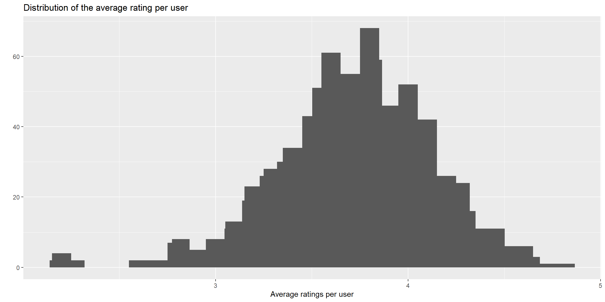

Sec 5 Collaborative filtering
Collaborative filtering (協同過濾) 會考慮到不同使用者的資訊，其演算法基於“使用者 (user)”和”物件 (item)“的相似性，用於計算的資料為矩陣形式，其中列 (row) 為 user、行 (column) 為 item，對應的值為 rating。 這個矩陣通常會是稀疏 (sparse) 的，尤其是物件很多的情況下，大部分使用者只會買其中幾項，因此這個矩陣會非常龐大且稀疏。
協同過濾的概念很像對遺失值進行插補，因我我們的目的是推薦物品給還未對該物品進行評分的使用者。以電影來說，我們希望推薦使用者它還未看過但可能會感興趣的電影。
訓練及測試
通常在建模的時候會把資料分為訓練集和測試集來檢查模型是否有問題，但在協同過濾中這是比較沒有必要的。 因為前面提到過其概念很像補遺失值，那麼就不會有只補一部份資料的情況。 另外對協同過濾來說沒有實際的”新使用者”，因為新使用者不會有評分的資訊，就沒辦法被推薦。如果已經有評分的資訊，那不如也納進訓練裡來增加樣本，所以沒有必要再拆分資料。
預測的結果會是使用者接受推薦與否，也就是成功或失敗，因此我們能得到一個混淆矩陣:
| True | |||
| 1 (Positive) | 0 (Negative) | ||
| Pred. | 1 | TP | FP |
| 0 | FN | TN |
我們會比較專注在“FP”的部分，因為預測它是1表示它和1的那群很相似，所以要推薦或是建議給它。混淆矩陣可以計算很多指標，因為我們會比較在意成功，所以召回率比較重要，舉例來說在路上發傳單，會專注在收了傳單且有來的人。
相似性(similarity)
- pearson (皮爾森相關係數): \(m_{pearson(x,y)}=\frac1n\sum(\frac{X-\bar X}{s_X})(\frac{Y-\bar Y}{s_Y})\)
- cosine: \(m_{cosine}=\frac{X\cdot Y}{||X||\cdot||Y||}\)
- jacard (二元資料適合使用): \(J(X,Y)=\frac{|A\cap B|}{|A\cup B|}=\frac{|A\cap B|}{|A|+|B|-|A\cap B|}\)
演算法
- Item-based collaborative filtering (IBCF): 識別同個使用者購買過的物品，推薦相似的物品
- 根據相似矩陣推薦項目，一旦建立了模型，就不需要訪問原始資料
- 對於每個項目，模型存儲了 k 個最相似的項目，因此一旦建立了模型，信息量就很小，這在在大量資料下是一個優勢
- User-based collaborative filtering (UBCF): 識別相似的使用者，推薦相似使用者購買過的最高評分的物品
- 需要訪問所有的資料來進行預測，因此大資料不太合適
- UBCF的正確率比IBCF稍微高些，因此如果資料不是太大，UBCF是個不錯的選擇
限制
在處理新的使用者或是物品時，這個演算法會有以下的問題，以電影評分為例:
- 如果新的使用者沒有看過任何電影，IBCF和UBCF都沒辦法推薦，因為兩種演算法的預測都需要基於使用者已經評過分的資訊
- 如果新的電影沒有被任何人觀看，那它永遠不會被推薦。
- 該演算法僅使用評分矩陣，但有可能有其他的資訊可以改善推薦，因此有了其他新方法
延伸: Content-based filtering
該演算法以對物品的描述為開始且不需要考慮到其他使用者，而是推薦和使用者過去購買的物品相似的物品
步驟:
- 定義物品的描述
- 基於購買紀錄定義使用者檔案
- 推薦和使用者檔案相符的物品
延伸: Hybrid recommender systems
在很多情況下，我們會建立很多不同的模型，在機器學習中結合不同模型的結果通常會有較好的結果。 可以是平行運算(每個模型分開跑，在綜合結果)或是序列運算(前一個模型的結果是後一個模型的輸入)。
一個簡單的例子是協同過濾結合有關用戶或物品的信息。在IBCF的情況下，物品之間的距離可以同時考慮用戶的偏好和物品的描述。即使在UBCF中，用戶之間的距離也可以考慮他們的偏好和個人數據。
Preview
realRatingMatrix類型可用的方法、Pander呈現矩陣realRatingMatrix和Matrix的儲存空間差異- 計算相似矩陣，分為user之間和item之間
recommenderRegistry$get_entries(dataType = "realRatingMatrix"): 顯示可用的模型- EDA (Exploratory Data Analysis)
- Example: Movie
6.1: IBCF
6.2: UBCF
- Note:
recommenderlab::binarize中的minRating參數設定的是被判斷是否為1的最低評分，而不是item被評分的次數。 假設minRating=3，則3(含)以上為1，其它為0 (範例: Binarization)
5.1 Methods for “realRatingMatrix” Class
- 列出所有 S3 和 S4 generic function 可用的方法
methods(generic.function, class)temp=read.csv("data/MovieLense.csv")
library(recommenderlab)
MovieLense=as(temp,"realRatingMatrix")
DF=getData.frame(MovieLense)## [1] [ [<- binarize
## [4] calcPredictionAccuracy coerce colCounts
## [7] colMeans colSds colSums
## [10] denormalize dim dimnames
## [13] dimnames<- dissimilarity evaluationScheme
## [16] getData.frame getList getNormalize
## [19] getRatingMatrix getRatings getTopNLists
## [22] hasRating image normalize
## [25] nratings Recommender removeKnownRatings
## [28] rowCounts rowMeans rowSds
## [31] rowSums sample show
## [34] similarity
## see '?methods' for accessing help and source code- 使用pander，以矩陣呈現
- 使用函數
pander(x = NULL, ...)
methods_to_print <- as.character(methods_matrix)
methods_to_print <- methods_to_print[!grepl("coerce", methods_to_print)]
methods_to_print <- gsub(",.*", "", methods_to_print, perl = TRUE)
methods_to_print <- c(methods_to_print, "", "") # 湊齊才能用矩陣
library(pander)
pander::pander(matrix(methods_to_print, ncol = 3))| [ | dimnames<- | nratings |
| [<- | dissimilarity | Recommender |
| binarize | evaluationScheme | removeKnownRatings |
| calcPredictionAccuracy | getData.frame | rowCounts |
| calcPredictionAccuracy | getList | rowMeans |
| colCounts | getNormalize | rowSds |
| colMeans | getRatingMatrix | rowSums |
| colSds | getRatings | sample |
| colSums | getTopNLists | show |
| denormalize | hasRating | similarity |
| dim | image | |
| dimnames | normalize |
- 使用
rcode chunk
| [ | dimnames<- | nratings |
| [<- | dissimilarity | Recommender |
| binarize | evaluationScheme | removeKnownRatings |
| calcPredictionAccuracy | getData.frame | rowCounts |
| calcPredictionAccuracy | getList | rowMeans |
| colCounts | getNormalize | rowSds |
| colMeans | getRatingMatrix | rowSums |
| colSds | getRatings | sample |
| colSums | getTopNLists | show |
| denormalize | hasRating | similarity |
| dim | image | |
| dimnames | normalize |
5.2 Compare the storage sizes
- 回傳物件分配的空間
object.size(x)| Class | object size (bytes) |
|---|---|
| data.frame | 1725248 |
| realRatingMatrix | 1409432 |
| matrix, array | 12761360 |
可以看到recommenderlab的矩陣更簡潔，兩者差了9.05倍
5.3 Computie Similarity Matrix
- {recommenderlab} 計算評分的相似性
similarity(x, y = NULL, method = NULL, args = NULL, which = "users",
min_matching = 0, min_predictive = 0)method: “cosine”, “pearson”, “jaccard”, etc.which: 計算”users”(rows)或”items”(columns)之間的相似性min_matching: 最小評分數的閾值
- 使用者相似性
similarity_users <- similarity(MovieLense[1:5, ], method = "cosine", which = "users")
class(similarity_users)## [1] "simil" "dist"similarity_users_as_matrix=as.matrix(similarity_users)
similarity_users_as_matrix[nrow(similarity_users_as_matrix):1,] |>
pander::pander(plain.ascii = TRUE)| 1 | 2 | 3 | 4 | 5 | |
|---|---|---|---|---|---|
| 5 | 0.9663 | 0.9924 | 1 | 0.9973 | NA |
| 4 | 0.9596 | 0.9685 | 0.9565 | NA | 0.9973 |
| 3 | 0.917 | 0.9634 | NA | 0.9565 | 1 |
| 2 | 0.9803 | NA | 0.9634 | 0.9685 | 0.9924 |
| 1 | NA | 0.9803 | 0.917 | 0.9596 | 0.9663 |
- 物品相似性
similarity_items <- similarity(MovieLense[, 1:5], method = "cosine", which = "items")
similarity_items_as_matrix=as.matrix(similarity_items)
similarity_items_as_matrix[nrow(similarity_items_as_matrix):1,] |>
pander::pander(digits = 2, plain.ascii = TRUE, split.cells=12)| ’Til There Was You (1997) | 1-900 (1994) | 101 Dalmatians (1996) | 12 Angry Men (1957) | 187 (1997) | |
|---|---|---|---|---|---|
| 187 (1997) | 0.98 | 1 | 0.94 | 1 | NA |
| 12 Angry Men (1957) | 0.99 | 1 | 0.95 | NA | 1 |
| 101 Dalmatians (1996) | 0.8 | 1 | NA | 0.95 | 0.94 |
| 1-900 (1994) | NA | NA | 1 | 1 | 1 |
| ’Til There Was You (1997) | NA | NA | 0.8 | 0.99 | 0.98 |
add.text <- function(simil){
val <- round(as.vector(simil),2)
tmp <- data.frame(
val=c(val, rep(1,5)),
x=c(seq(.25,1,by=.25),seq(.25,1,by=.25)[-1],seq(.25,1,by=.25)[-(1:2)],seq(.25,1,by=.25)[-(1:3)],
seq(0,1,length.out=5)),
y=c(rep(0,4),rep(.25,3),rep(.5,2),rep(.75,1),
seq(0,1,length.out=5)),
col=c(ifelse(val>0.97, "white", "black"), rep(1,5))
)
text(tmp$x, tmp$y, tmp$val, col=tmp$col)
}
par(mfrow=c(1,2), mar=c(2,2,1,1))
image(similarity_users_as_matrix, main = "User similarity")
add.text(similarity_users)
image(similarity_items_as_matrix, main = "Item similarity")
add.text(similarity_items)5.4 Recommender Model
recommender_models <- recommenderRegistry$get_entries(dataType = "realRatingMatrix")
names(recommender_models)## [1] "HYBRID_realRatingMatrix" "ALS_realRatingMatrix"
## [3] "ALS_implicit_realRatingMatrix" "IBCF_realRatingMatrix"
## [5] "LIBMF_realRatingMatrix" "POPULAR_realRatingMatrix"
## [7] "RANDOM_realRatingMatrix" "RERECOMMEND_realRatingMatrix"
## [9] "SVD_realRatingMatrix" "SVDF_realRatingMatrix"
## [11] "UBCF_realRatingMatrix"## $HYBRID_realRatingMatrix
## [1] "Hybrid recommender that aggegates several recommendation strategies using weighted averages."
##
## $ALS_realRatingMatrix
## [1] "Recommender for explicit ratings based on latent factors, calculated by alternating least squares algorithm."
##
## $ALS_implicit_realRatingMatrix
## [1] "Recommender for implicit data based on latent factors, calculated by alternating least squares algorithm."
##
## $IBCF_realRatingMatrix
## [1] "Recommender based on item-based collaborative filtering."
##
## $LIBMF_realRatingMatrix
## [1] "Matrix factorization with LIBMF via package recosystem (https://cran.r-project.org/web/packages/recosystem/vignettes/introduction.html)."
##
## $POPULAR_realRatingMatrix
## [1] "Recommender based on item popularity."
##
## $RANDOM_realRatingMatrix
## [1] "Produce random recommendations (real ratings)."
##
## $RERECOMMEND_realRatingMatrix
## [1] "Re-recommends highly rated items (real ratings)."
##
## $SVD_realRatingMatrix
## [1] "Recommender based on SVD approximation with column-mean imputation."
##
## $SVDF_realRatingMatrix
## [1] "Recommender based on Funk SVD with gradient descend (https://sifter.org/~simon/journal/20061211.html)."
##
## $UBCF_realRatingMatrix
## [1] "Recommender based on user-based collaborative filtering."- extraction function
"[["## $a
## [1] 1 2 3 4 5 6 7 8 9 10
##
## $b
## [1] "a" "b" "c" "d" "e" "f" "g" "h" "i" "j"## [1] 1 2 3 4 5 6 7 8 9 10## $a
## [1] 1 2 3 4 5 6 7 8 9 10我們只使用IBCF(item-based collaborative filtering)和UBCF(user-based collaborative filtering)
- 查看參數
df_parameters <- data.frame(
parameter = names(recommender_models$IBCF_realRatingMatrix$parameters),
default = unlist(recommender_models$IBCF_realRatingMatrix$parameters),
row.names = NULL
)
df_parameters |> knitr::kable()| parameter | default |
|---|---|
| k | 30 |
| method | cosine |
| normalize | center |
| normalize_sim_matrix | FALSE |
| alpha | 0.5 |
| na_as_zero | FALSE |
5.5 Exploratory Data Analysis
## [1] 943 1664MovieLense包含943個users和1664部電影
realRatingMatrix屬於S4類別(class)，要用slotNames取得內容名稱
## [1] "data" "normalize"MovieLense@data屬於dgCMatrix類別，屬於稀疏數值矩陣(sparse numeric matrices)
## [1] "dgCMatrix"
## attr(,"package")
## [1] "Matrix"## [1] 943 1664- 評分為整數，範圍為0~5
## [1] 0 1 2 3 4 5table_ratings <- table(vector_ratings)
df_ratings <- data.frame(
rating = names(table_ratings),
occurrences = as.vector(table_ratings)
)
df_ratings |> knitr::kable()| rating | occurrences |
|---|---|
| 0 | 1469760 |
| 1 | 6059 |
| 2 | 11307 |
| 3 | 27002 |
| 4 | 33947 |
| 5 | 21077 |
- 評分為0表示遺失值，因此移除它
## [1] 1569152
## [1] 993925.5.2 Movie views
- Star Wars有最高的觀看數
views_per_movie <- colCounts(MovieLense)
table_views <- data.frame(
movie = names(views_per_movie),
views = views_per_movie
)
table_views <- table_views[order(table_views$views, decreasing = TRUE), ]
ggplot(head(table_views), aes(x=movie, y=views))+
geom_bar(stat="identity")+
theme(axis.text.x = element_text(angle = 45, hjust = 1)) +
labs(title = "Number of views of the top movies")5.5.3 Average ratings
- 大部分電影的平均評分在3左右，其中有些評分為1或5，可能是因為只有少數人評分
average_ratings <- colMeans(MovieLense)
ggplot(data.frame(average_ratings), aes(x=average_ratings))+
geom_histogram()+
labs(title = "Distribution of the average movie rating",
x="Average Ratings")- 因此我們應該保留大部分人都有評分的電影，保留超過100人觀看的電影，共332部
## Min. 1st Qu. Median Mean 3rd Qu. Max.
## 1 7 27 60 80 583## [1] 332- 移除極端值後，大部分電影的平均評分在4左右
5.5.4 Rating Matrix
- 保留大多人評分的電影和評分大多電影的人
min_n_movies <- quantile(rowCounts(MovieLense), 0.99)
min_n_users <- quantile(colCounts(MovieLense), 0.99)
image(MovieLense[rowCounts(MovieLense) > min_n_movies,
colCounts(MovieLense) > min_n_users],
main = "Heatmap of the top 1% users and movies")
5.5.5 Normalize
因為評分為1~5，圖形呈現為單一色階，因此無法明顯看出電影的好壞，我們可以考慮標準化，讓評分的範圍包含負數及正數且平均為0的資料
- 太少人看的電影可能會有偏誤(bias)
- 太少評分的使用者可能會有偏誤
- 保留評分超過50部電影的使用者和被超過100人評分的電影
ratings_movies <- MovieLense[rowCounts(MovieLense) > 50,
colCounts(MovieLense) > 100]
min_movies <- quantile(rowCounts(ratings_movies), 0.98)
min_users <- quantile(colCounts(ratings_movies), 0.98)
image(ratings_movies[rowCounts(ratings_movies) > min_movies,
colCounts(ratings_movies) > min_users],
main = "Heatmap of the top users and movies")average_ratings_per_user <- rowMeans(ratings_movies)
qplot(average_ratings_per_user) +
stat_bin(binwidth = 0.1) +
ggtitle("Distribution of the average rating per user") +
xlab("Average ratings per user")
- Normalize
normalize(x, method="center", row=TRUE)method: “center”(減平均) or “Z-score”(再除標準差)
ratings_movies_norm <- normalize(ratings_movies)
min_movies <- quantile(rowCounts(ratings_movies), 0.98)
min_users <- quantile(colCounts(ratings_movies), 0.98)
image(ratings_movies_norm[rowCounts(ratings_movies_norm) > min_movies,
colCounts(ratings_movies_norm) > min_users],
main = "Heatmap of the top 2% users and movies")5.5.6 Binarization
min_movies_binary <- quantile(rowCounts(ratings_movies), 0.95)
min_users_binary <- quantile(colCounts(ratings_movies), 0.95)- 評分為1(含)以上為1，其餘為0
ratings_movies_watched <- binarize(ratings_movies, minRating = 1)
image(ratings_movies_watched[rowCounts(ratings_movies) > min_movies_binary,
colCounts(ratings_movies) > min_users_binary],
main = "Heatmap of the top 5% users and movies")- 評分為3(含)以上為1，其餘為0
ratings_movies_good <- binarize(ratings_movies, minRating = 3)
image(ratings_movies_good[rowCounts(ratings_movies) > min_movies_binary,
colCounts(ratings_movies) > min_users_binary],
main = "Heatmap of the top users and movies")5.6 [Rating] Example: Movie
library(recommenderlab)
library(ggplot2)
temp=read.csv("data/MovieLense.csv")
MovieLense=as(temp,"realRatingMatrix")
ratings_movies <- MovieLense[rowCounts(MovieLense) > 50,
colCounts(MovieLense) > 100]
# ratings_movies_norm <- normalize(ratings_movies)
dim(ratings_movies)## [1] 560 332- 列出兩種演算法的參數
|
|
k: k 個最相似的物品method: 相似函數nn: 相似使用者的個數
model = Recommender(data, method, parameter=list(k=30))
getModel(model)- 使用
getModel取得模型的細節
5.6.1 [Rating] Item-based Collaborative Filtering
IBCF考慮使用者的購買紀錄並推薦相似的物品，其核心演算法基於下列的步驟:
- 對於每兩個物品，測量它們在接收到相似用戶評分方面的相似性
- 對於每個物品，識別 k 個最相似的物品
- 對於每個用戶，識別與該用戶購買最相似的物品
5.6.1.1 Build model
model_I <- Recommender(data = ratings_movies, method = "IBCF")
model_details <- getModel(model_I)
names(model_details) |> matrix(ncol=3) |> pander::pander()| description | method | alpha |
| sim | normalize | na_as_zero |
| k | normalize_sim_matrix | verbose |
## [1] "IBCF: Reduced similarity matrix"- sim包含相似矩陣，可以看到方陣的大小和項目數相同(原始資料矩陣)
## [1] "dgCMatrix"
## attr(,"package")
## [1] "Matrix"
## [1] 332 332-
我們可以看到很多地方等於0，因為每列只有
k=30個物品，我們可以透過加總每列數值>0的個數來檢查
## [1] 30Hand-on problem 1
##
## 30
## 332
##
## 30
## 332注意: 這個矩陣不是對稱的
因為每列只有前30個相似性會被保留，所以實際上每行的非空元素依賴於相應電影被包含在另一部電影的前 k 名中的次數。
從圖5.1可以看到，有一些電影和很多其他的電影相似，表5.2列出了前6部和最多電影相似的電影
col_sums <- colSums(model_details$sim > 0)
DF_col_sums=as.data.frame(col_sums)
ggplot(DF_col_sums,aes(x=col_sums)) +
geom_histogram()
Figure 5.1: Distribution of the column count
| movie | col_sum |
|---|---|
| Batman Forever (1995) | 77 |
| Close Shave, A (1995) | 77 |
| Jungle2Jungle (1997) | 77 |
| Wrong Trousers, The (1993) | 77 |
| Mimic (1997) | 73 |
| Ghost and the Darkness, The (1996) | 72 |
5.6.1.2 (Predict) Recommend movies to users
對於每個用戶，該算法提取其評分的電影。
對於每部電影，從相似性矩陣開始識別所有相似的項目。
然後，該算法按以下方式對每個相似的項目進行排名：
- 提取與此項目相關聯的用戶評分，該評分用作權重
- 提取與該項目相關聯的每個購買的相似性
- 將每個權重乘以相關的相似性並加總
然後，該算法識別前 n 個推薦項目
pred_I <- predict(object = model_I,
newdata = ratings_movies,
n = 6,
type=c("topNList","ratings","ratingMatrix")[1])
pred_I## Recommendations as 'topNList' with n = 6 for 560 users.-
pred_I包含推薦
## [1] "topNList"
## attr(,"package")
## [1] "recommenderlab"
## [1] "items" "ratings" "itemLabels" "n"items: 每個用戶推薦項目的索引列表itemLabels: 項目的名稱n: 推薦數量
Hand-on problem 2
- 以使用者1為例，表5.3列出了推薦給使用者1的6部電影
| index | movie |
|---|---|
| 55 | Casablanca (1942) |
| 20 | Apt Pupil (1998) |
| 188 | Maltese Falcon, The (1941) |
| 218 | North by Northwest (1959) |
| 189 | Manchurian Candidate, The (1962) |
| 260 | Schindler’s List (1993) |
- 我們可以建立一個各使用者的推薦矩陣，表5.4列出了推薦給前4個使用者的6部電影
## [1] 6 560| 0 | 1 | 2 | 3 |
|---|---|---|---|
| Casablanca (1942) | 12 Angry Men (1957) | Bound (1996) | Trainspotting (1996) |
| Apt Pupil (1998) | African Queen, The (1951) | Donnie Brasco (1997) | GoodFellas (1990) |
| Maltese Falcon, The (1941) | Alien (1979) | In the Line of Fire (1993) | Killing Fields, The (1984) |
| North by Northwest (1959) | Aliens (1986) | My Left Foot (1989) | Platoon (1986) |
| Manchurian Candidate, The (1962) | Annie Hall (1977) | Rainmaker, The (1997) | Twelve Monkeys (1995) |
| Schindler’s List (1993) | Apocalypse Now (1979) | Seven Years in Tibet (1997) | Contact (1997) |
- 接著我們可以查看最被推薦的電影，圖5.2顯示了各電影被推薦的次數之分布，我們可以看到大部分的電影只被推薦很少次，而少部分的電影被推薦很多次
number_of_items <- factor(table(recc_matrix))
ggplot(data.frame(x=number_of_items))+
geom_bar(aes(x=x))+
labs(x="推薦次數")Figure 5.2: IBCF 推薦次數分布圖
- 接著我們來查看哪幾部電影被推薦最多次，表5.5列出了前4部被推薦最多次的電影
number_of_items_top <- number_of_items |>
sort(decreasing = TRUE) |>
head(4)
knitr::kable(data.frame(
names(number_of_items_top),
number_of_items_top
), row.names = F, col.names = c("Movie", "Recommend times"),
caption = "the most popular movies")| Movie | Recommend times |
|---|---|
| 12 Angry Men (1957) | 72 |
| As Good As It Gets (1997) | 53 |
| Close Shave, A (1995) | 53 |
| Apocalypse Now (1979) | 48 |
5.6.2 [Rating] User-based Collaborative Filtering
UBCF演算法步驟:
- 測量使用者之間的相似性
- 識別最相似的使用者
2.1. Top k: k nearest neighbors (KNN)
2.2. threshold: 考慮相似性高於門檻值的使用者
- 計算最相似使用者購買過的物品之評分，評分為相似使用者之評分的平均
3.1. 平均
3.2. 加權平均，以相似性為權重
5.6.2.1 Build model
model_U <- Recommender(data = ratings_movies, method = "UBCF")
model_details <- getModel(model_U)
names(model_details) |> c("","") |> matrix(ncol=3) |> pander::pander()| description | sample | min_predictive_items |
| data | weighted | verbose |
| method | normalize | |
| nn | min_matching_items |
-
data包含了評分矩陣，原因是UBCF需要訪問所有的資料來做預測
## 560 x 332 rating matrix of class 'realRatingMatrix' with 55298 ratings.
## Normalized using center on rows.5.6.2.2 (Predict) Recommend movies to users
## Recommendations as 'topNList' with n = 6 for 560 users.| 0 | 1 | 2 | 3 |
|---|---|---|---|
| In the Name of the Father (1993) | Welcome to the Dollhouse (1995) | Crying Game, The (1992) | Godfather: Part II, The (1974) |
| Shine (1996) | Amistad (1997) | Adventures of Priscilla, Queen of the Desert, The (1994) | Gone with the Wind (1939) |
| Close Shave, A (1995) | Big Night (1996) | Close Shave, A (1995) | Big Night (1996) |
| Secrets & Lies (1996) | Strictly Ballroom (1992) | Wrong Trousers, The (1993) | Wizard of Oz, The (1939) |
| Apt Pupil (1998) | Blade Runner (1982) | Sleepers (1996) | Lawrence of Arabia (1962) |
| Cool Hand Luke (1967) | Cold Comfort Farm (1995) | North by Northwest (1959) | Raging Bull (1980) |
number_of_items <- factor(table(recc_matrix))
ggplot(data.frame(x=number_of_items))+
geom_bar(aes(x=x))+
labs(x="推薦次數")Figure 5.3: UBCF 推薦次數分布圖
number_of_items_top <- number_of_items |>
sort(decreasing = TRUE) |>
head(4)
knitr::kable(data.frame(
names(number_of_items_top),
number_of_items_top
), row.names = F, col.names = c("Movie", "Recommend times"),
caption = "the most popular movies")| Movie | Recommend times |
|---|---|
| Close Shave, A (1995) | 169 |
| Good Will Hunting (1997) | 94 |
| Wrong Trousers, The (1993) | 73 |
| Secrets & Lies (1996) | 68 |
5.7 [Binary] Example: Movie
前面我們使用了評分來建立模型，但有可能有下列的情況發生:
- 我們知道已經購買了哪些項目，但不知道它們的評分
- 對於每個用戶，我們不知道它購買了哪些項目，但我們知道它喜歡哪些項目
在這些情況下，我們可以建立一個矩陣，其值不是評分，而是0/1資料，如果使用者購買或喜歡該物品則記為1，否則為0。
-
在我們的情況中，從
ratings_movies開始，我們可以建立一個ratings_movies_watched矩陣，如果用戶看了電影為 1，否則為 0。圖5.4顯示每個使用者觀看了幾部電影的分布，紅色虛線為平均，約為100部
ratings_movies_watched <- binarize(ratings_movies, minRating = 1)
qplot(rowSums(ratings_movies_watched)) +
stat_bin(binwidth = 10) +
geom_vline(xintercept = mean(rowSums(ratings_movies_watched)),
col = "red", linetype = "dashed")Figure 5.4: Distribution of movies by user
5.7.1 [Binary] Item-based Collaborative Filtering
表5.8列出了IBCF在二元資料推薦給前4個使用者的結果，評分資料的結果見表5.4
bin_model_I <- Recommender(
data = ratings_movies_watched,
method = "IBCF",
parameter = list(method = "Jaccard")
)
# model_details <- getModel(bin_model_I)
recc_predicted <- predict(object = bin_model_I,
newdata = ratings_movies_watched,
n = 6)
recc_matrix <- sapply(recc_predicted@items, function(x){
colnames(ratings_movies_watched)[x]
})| 0 | 1 | 2 | 3 |
|---|---|---|---|
| E.T. the Extra-Terrestrial (1982) | Empire Strikes Back, The (1980) | Raiders of the Lost Ark (1981) | Pulp Fiction (1994) |
| Speed (1994) | Return of the Jedi (1983) | Star Wars (1977) | Terminator, The (1984) |
| True Lies (1994) | Silence of the Lambs, The (1991) | Empire Strikes Back, The (1980) | Jurassic Park (1993) |
| Batman (1989) | Raiders of the Lost Ark (1981) | Indiana Jones and the Last Crusade (1989) | Terminator 2: Judgment Day (1991) |
| Mission: Impossible (1996) | Indiana Jones and the Last Crusade (1989) | Back to the Future (1985) | Groundhog Day (1993) |
| Schindler’s List (1993) | Back to the Future (1985) | Pulp Fiction (1994) | Braveheart (1995) |
5.7.2 [Binary] User-based Collaborative Filtering
表5.9列出了UBCF在二元資料推薦給前4個使用者的結果，評分資料的結果見表5.6
bin_model_U <- Recommender(
data = ratings_movies_watched,
method = "UBCF",
parameter = list(method = "Jaccard")
)
recc_predicted <- predict(object = bin_model_U,
newdata = ratings_movies_watched,
n = 6)
recc_matrix <- sapply(recc_predicted@items, function(x){
colnames(ratings_movies_watched)[x]
})| 0 | 1 | 2 | 3 |
|---|---|---|---|
| Father of the Bride Part II (1995) | Boot, Das (1981) | Jungle2Jungle (1997) | Philadelphia Story, The (1940) |
| Killing Fields, The (1984) | North by Northwest (1959) | George of the Jungle (1997) | Remains of the Day, The (1993) |
| First Wives Club, The (1996) | Willy Wonka and the Chocolate Factory (1971) | Fly Away Home (1996) | Dead Man Walking (1995) |
| My Left Foot (1989) | Mother (1996) | Beauty and the Beast (1991) | Cool Hand Luke (1967) |
| Fly Away Home (1996) | Cold Comfort Farm (1995) | Gone with the Wind (1939) | As Good As It Gets (1997) |
| Primal Fear (1996) | Big Night (1996) | Stargate (1994) | Deer Hunter, The (1978) |